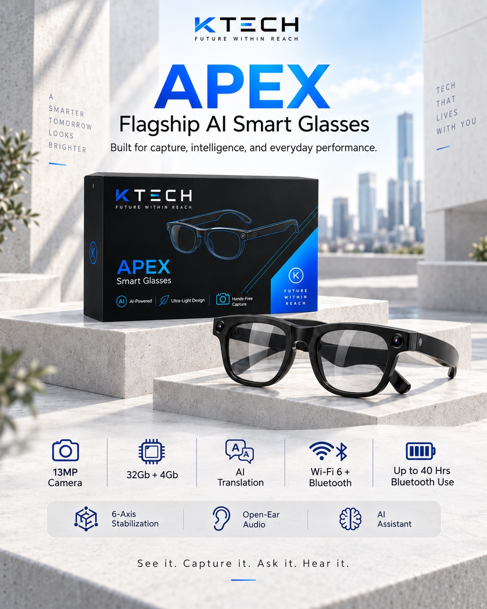
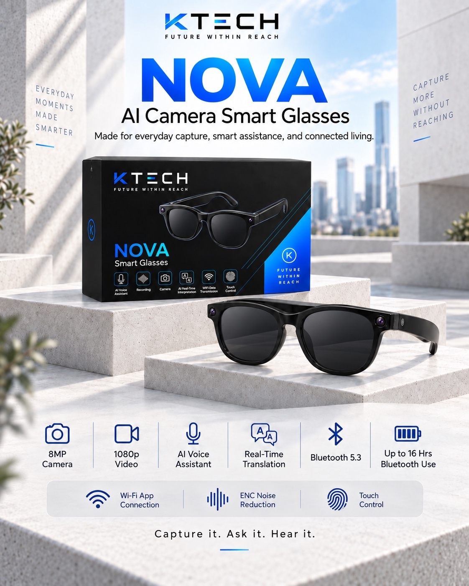

Flagship AI smart glasses
APEX
₱5,995 ₱6,495First-batch offer
- Samsung 13 MP camera
- Six-axis photo & video stabilisation
- AI assistant & translation
- Open-ear audio
KTECH / CONSUMER TECHNOLOGY
We discover and curate emerging technology that makes the way you work, create, and connect more useful.

IN FOCUS / APEX SMART GLASSES ↗THE COMPANY
KTECH is a consumer technology brand built around discovery, accessibility, and usefulness. We bring a focused selection of hardware closer to the people who can make the most of it.
Our background and direction ↗THE COLLECTION
Flagship AI smart glasses
₱5,995 ₱6,495First-batch offer

AI camera smart glasses
₱5,995

Smart audio glasses
₱4,995
Battery figures are supplier ratings and vary with settings and use. AI features depend on the companion app, connection and supported services.
APEX / EVERYDAY INTELLIGENCE
Speak naturally. Ask about what you see. Stay in the moment.
Ask questions and get conversational support through the connected AI assistant.
Use photo-based object recognition to learn about what is in front of you.
Supported translation modes help you understand and keep conversations moving.
Access travel navigation through supported companion-app services.
Take stabilised photos and video, with noise-reduced recording and supported first-person streaming.
Listen to music, take Bluetooth calls and keep your glasses current with app and firmware updates.
AI, navigation, translation and live streaming depend on the companion app, phone connection, supported services and regional availability.
The details behind APEX ↗FIND YOUR FIT
Choose APEX for the 13 MP camera, six-axis stabilisation and AI assistance. The first-batch offer puts it at the same price as NOVA.
Choose NOVA for 8 MP photos, 1080p video, music, translation and voice assistance.
Choose NEO for music and calls, touch controls and an everyday frame.
OUR PURPOSE
FIRST BATCH / SEPTEMBER 2026
Choose your model and message KTECH to confirm your reservation.
Message KTECH to preorder ↗NEO ₱4,995 · NOVA ₱5,995 · APEX ₱5,995 promotional price.
NEO: ₱2,497.50. NOVA or promotional APEX: ₱2,997.50. Confirm payment details with KTECH.
Cutoff: 30 September 2026. Estimated stock arrival: 14 October 2026. Delivery follows arrival and balance payment.